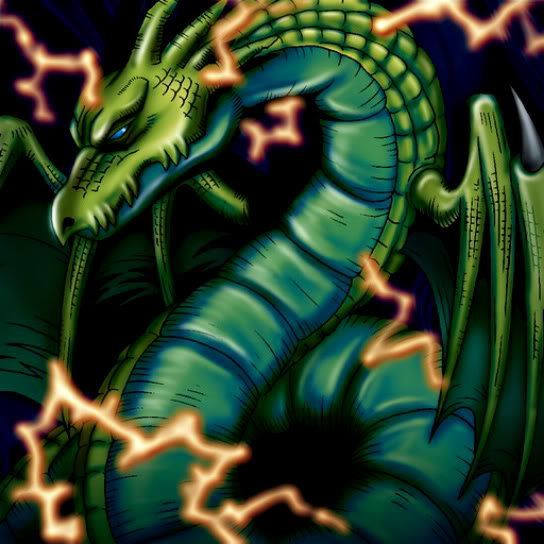

Thunder Dragon

STATS
ATK: 1600
DEF: 1500DECK COST
Deck Cost per Card: 31Fusion List (37 Possible Fusions)
- Thunder Dragon + B. Dragon Jungle King = Twin-Headed Thunder Dragon
- Thunder Dragon + Baby Dragon = Twin-Headed Thunder Dragon
- Thunder Dragon + Blackland Fire Dragon = Twin-Headed Thunder Dragon
- Thunder Dragon + Bolt Escargot = Twin-Headed Thunder Dragon
- Thunder Dragon + Bolt Penguin = Twin-Headed Thunder Dragon
- Thunder Dragon + Crawling Dragon = Twin-Headed Thunder Dragon
- Thunder Dragon + Curse of Dragon = Twin-Headed Thunder Dragon
- Thunder Dragon + D. Human = Sword Arm of Dragon
- Thunder Dragon + Darkfire Dragon = Twin-Headed Thunder Dragon
- Thunder Dragon + Dragon Zombie = Skelgon
- Thunder Dragon + Electric Lizard = Twin-Headed Thunder Dragon
- Thunder Dragon + Electric Snake = Twin-Headed Thunder Dragon
- Thunder Dragon + Firegrass = B. Dragon Jungle King
- Thunder Dragon + Gaia the Dragon Champion = Twin-Headed Thunder Dragon
- Thunder Dragon + Haniwa = Stone D.
- Thunder Dragon + Hannibal Necromancer = Kaminari Attack
- Thunder Dragon + Harpie's Pet Dragon = Twin-Headed Thunder Dragon
- Thunder Dragon + Kairyu-Shin = Twin-Headed Thunder Dragon
- Thunder Dragon + Kaiser Dragon = Twin-Headed Thunder Dragon
- Thunder Dragon + LaLa Li-oon = Twin-Headed Thunder Dragon
- Thunder Dragon + LaMoon = Kaminari Attack
- Thunder Dragon + Lesser Dragon = Twin-Headed Thunder Dragon
- Thunder Dragon + Maha Vailo = Kaminari Attack
- Thunder Dragon + Mechanical Snail = Metal Dragon
- Thunder Dragon + Mega Thunderball = Twin-Headed Thunder Dragon
- Thunder Dragon + One-Eyed Shield Dragon = Twin-Headed Thunder Dragon
- Thunder Dragon + Oscillo Hero #2 = Twin-Headed Thunder Dragon
- Thunder Dragon + Parrot Dragon = Twin-Headed Thunder Dragon
- Thunder Dragon + Red-Eyes B. Dragon = Twin-Headed Thunder Dragon
- Thunder Dragon + Sea King Dragon = Twin-Headed Thunder Dragon
- Thunder Dragon + Seiyaryu = Twin-Headed Thunder Dragon
- Thunder Dragon + Skull Servant = Skelgon
- Thunder Dragon + Stone D. = Twin-Headed Thunder Dragon
- Thunder Dragon + Thunder Dragon = Twin-Headed Thunder Dragon
- Thunder Dragon + Tripwire Beast = Twin-Headed Thunder Dragon
- Thunder Dragon + Wicked Dragon with the Ersatz Head = Twin-Headed Thunder Dragon
- Thunder Dragon + Witch of the Black Forest = Kaminari Attack